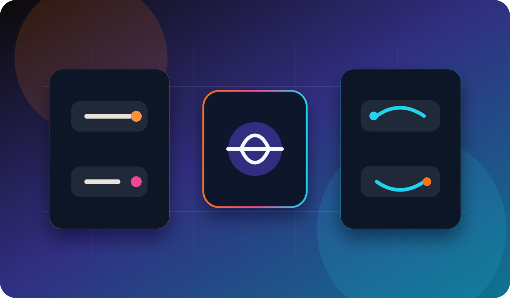

How do I choose between an AI chatbot and a conversational AI voice agent for inbound sales?
Choose the channel based on buyer intent. Chat is best for written guidance and browsing. Voice is best when the lead is urgent, high-intent or needs fast qualification.

1. Start with buyer intent
If the visitor is comparing options, reading pages and asking simple product questions, a chatbot is usually enough. If the prospect wants an answer now, has called your company, or is ready to speak with sales, a voice agent is a better fit.
2. Use a chatbot when the journey is written
- The prospect is browsing your website.
- The questions are repetitive and easy to structure.
- The goal is to guide to the right page or collect a form.
- The buyer does not expect an immediate phone conversation.
For a broader comparison, see the French guide AI agent vs chatbot.
3. Use a voice agent when speed matters
- The lead is calling outside business hours.
- Missed calls create lost pipeline.
- The offer needs quick qualification before human handoff.
- The buyer is more likely to speak than type.
Voice also works well when inbound sales depends on timing: callback requests, demos, urgent service questions, local services and qualification before a sales rep joins.
4. The best setup often combines both
A practical inbound sales stack uses chat for browsing and voice for intent spikes. The chatbot answers low-pressure questions. The voice agent handles calls, callbacks and high-intent leads. Both should write clean summaries into the CRM.
5. Decision checklist
- Do visitors usually ask while reading? Start with chat.
- Do prospects call and expect speed? Add voice.
- Do reps waste time on unqualified leads? Use structured qualification.
- Do you need proof before scaling? Track handoff quality and booked conversations.
- Do you operate in several languages? Test accents and fallback rules.
6. What to measure
Measure answer rate, lead qualification rate, handoff quality, sales team acceptance, missed-call recovery and the number of conversations that turn into a real opportunity. The winning channel is the one that creates better sales conversations, not the one that looks more advanced.
FAQ
Is a voice agent better than a chatbot for inbound sales?
Not always. It is better when the lead is urgent or phone-first. A chatbot is better for browsing, written questions and lightweight qualification.
Should I replace my chatbot with a voice agent?
No. Most teams should define separate roles: chat for website assistance, voice for calls and callbacks.
What is the first workflow to build?
Start with missed-call recovery: the voice agent answers, asks a few qualification questions, creates a summary and routes the lead to the right person.
How do I avoid bad handoffs?
Keep qualification questions short, require structured summaries and allow the human rep to see why the lead was routed.